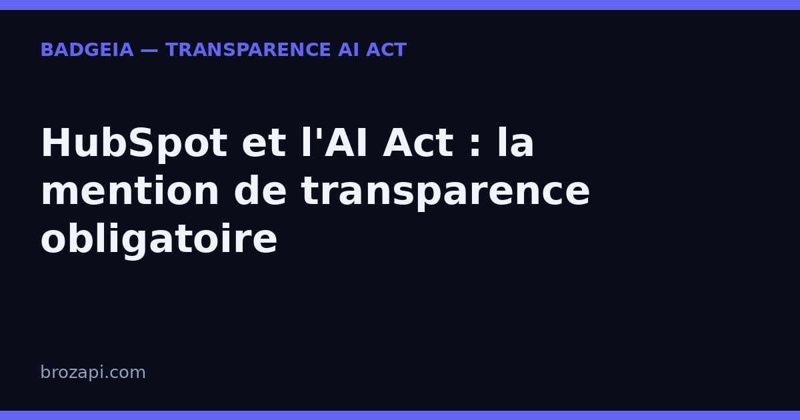

HubSpot et l'AI Act : la mention de transparence obligatoire

Publié le · Lecture : 8 minutes
HubSpot n'est plus une simple plateforme de marketing automation. C'est devenu, au fil des années, une suite complète — CRM, ventes, service client, CMS — qui intègre désormais sa propre couche d'intelligence artificielle, baptisée Breeze. Chatbots, agent d'assistance client, rédaction assistée de contenus : l'IA est partout, souvent sans que le visiteur de votre site ne s'en doute.
C'est précisément ce qui déclenche l'obligation. Depuis le 2 août 2026, l'article 50 de l'AI Act impose d'informer clairement toute personne qui interagit avec un système d'IA sur votre site. Si HubSpot gère votre chat en ligne, vos visiteurs doivent savoir — sans ambiguïté — qu'ils parlent à une machine.
Voici ce que cela change concrètement quand on utilise HubSpot, et comment se mettre en règle sans renoncer à des outils qui, eux, vous font gagner des heures.
HubSpot et l'IA : ce qui a changé
Pour comprendre l'ampleur de l'obligation, il faut saisir que HubSpot propose aujourd'hui deux façons d'automatiser la conversation — et qu'elles ne relèvent pas exactement des mêmes réglages.
Les chatflows, les chatbots « à règles ». Historiquement, HubSpot permet de créer des chatbots simples, dits « à règles », via la section Service client › Chatflows. Ce sont des parcours pré-écrits : le bot pose des questions, qualifie un lead, réserve une réunion ou crée un ticket. Aucune intelligence là-dedans — juste un script et des branches « si/alors » — mais le visiteur, lui, ne fait pas forcément la différence entre ce script et un humain.
Breeze, la couche IA de HubSpot. Depuis 2024, HubSpot a ajouté Breeze, qui regroupe trois briques : Breeze Copilot (l'assistant interne), Breeze Agents (des agents autonomes, dont le Customer Agent) et Breeze Intelligence (l'enrichissement de données). C'est le Customer Agent qui nous intéresse ici : déployé sur le chat de votre site, il répond seul aux questions des visiteurs en s'appuyant sur votre base de connaissances et les données de votre CRM, avant de passer la main à un humain.
Le point décisif : dès qu'un chatbot ou l'agent Breeze génère des réponses au lieu de suivre un script figé, l'article 50 s'applique.
Pourquoi HubSpot (et Breeze) déclenchent l'obligation
L'article 50 du règlement européen sur l'intelligence artificielle pose une règle simple : toute personne qui interagit avec un système d'IA doit en être informée « de manière claire et distincte », dès le début de l'échange. L'objectif est qu'aucun internaute ne soit trompé sur la nature de son interlocuteur.
Or HubSpot coche cette case avec une particularité : l'IA y est conçue pour être fluide. Le Customer Agent répond avec un ton conversationnel, cite vos ressources, relaie vers un commercial — en bref, il fait tout pour ressembler à un chargé de clientèle efficace. Plus la conversation est naturelle, plus le visiteur a de chances de croire qu'il échange avec un humain de votre équipe. C'est le paradoxe : l'efficacité de l'outil rend la mention de transparence d'autant plus nécessaire.
Bonne nouvelle : HubSpot a prévu le cas. Quand l'agent d'assistance client (Breeze) répond dans le widget de chat, la mention « Géré par l'IA » s'affiche automatiquement dans l'en-tête. C'est un bon point de départ — mais pas un blanc-seing : cette mention ne couvre que l'agent Breeze, pas les chatbots à règles que vous avez construits vous-même.
Ce que dit concrètement l'article 50
L'obligation reste proportionnée, mais elle a des exigences précises. L'information doit être :
- claire et distincte : le visiteur comprend immédiatement qu'il parle à une machine ;
- délivrée dès le début de l'interaction, pas cachée en bas de page ni en fin de conversation ;
- formulée dans la langue du visiteur — en pratique, sur un site francophone, la mention doit l'être en français.
Le non-respect expose à des sanctions prévues par l'article 99 du règlement, qui peuvent atteindre plusieurs millions d'euros ou un pourcentage du chiffre d'affaires mondial. Au-delà du risque financier, l'enjeu est d'abord la confiance : un visiteur qui découvre seul qu'il parlait à une machine est un client potentiel qu'on perd.
Ce que vous devez afficher
Pour un chat HubSpot — chatbot à règles ou agent Breeze — voici les éléments à mettre en place :
- Une mention visible dès la première bulle. Le message de bienvenue doit annoncer la nature de l'interlocuteur. Exemple prêt à coller : « Bonjour, je suis l'assistant virtuel de [votre entreprise]. Un membre de l'équipe peut prendre le relais à tout moment. »
- Un rappel persistant dans la fenêtre. Une ligne discrète — « Assistant IA · un conseiller peut vous répondre » — maintient l'information visible pendant toute la conversation, y compris sur mobile.
- Une porte de sortie vers un humain. L'article 50 ne l'exige pas formellement, mais l'annoncer rassure et renforce votre transparence. HubSpot facilite ce transfert : profitez-en.
- Une trace de votre configuration. Noter la date de mise en place et le texte affiché est une bonne pratique recommandée — une précaution utile en cas de contrôle, pas une exigence du texte.
Comment configurer la transparence dans HubSpot
HubSpot vous donne les leviers, même s'ils sont dispersés entre les chatflows et l'agent Breeze. Voici les points à vérifier, du plus important au plus avancé.
1. Le message de bienvenue du chatflow. C'est l'emplacement clé. Dans Service client › Chatflows, ouvrez votre chatbot à règles et personnalisez le message de bienvenue pour que le bot s'annonce comme assistant (virtuel ou IA) dès l'ouverture. C'est la première chose que lit le visiteur.
2. La mention « Géré par l'IA » de l'agent Breeze. Si vous utilisez le Customer Agent, vérifiez que cette mention apparaît bien dans l'en-tête du widget. Elle est automatique, mais confirmez-la en conditions réelles — notamment sur mobile.
3. Le nom du bot. Évitez un prénom humain sans précision : un bot nommé « Sarah » qui répond sans jamais préciser qu'il est une IA crée un vrai risque de confusion. Si vous tenez à personnifier, associez toujours une mention explicite : « Sarah, assistante virtuelle de [votre entreprise] ».
4. Les branches « si/alors ». Si vos chatflows enchaînent des réponses automatisées complexes, vérifiez que la mention figure avant la première question de qualification, pas après.
5. Les contenus générés par Breeze. Breeze peut aussi rédiger des articles, des pages ou des emails. Dès que ces contenus générés ou fortement assistés deviennent publics, le lecteur doit être informé qu'ils ont été produits avec l'aide d'une IA. C'est le même esprit que la mention de chat : un signalement clair, dès le premier mot.
6. Le multilinguisme. Un site en plusieurs langues doit adapter la mention à chaque langue, en particulier dans le message de bienvenue.
Une fois ces réglages faits, testez simplement : demandez à une personne extérieure de lire le chat et de dire, en quelques secondes, si elle comprend qu'elle parle à une IA. Si elle hésite, reformulez.
Mini-FAQ : les questions des équipes marketing
Mon chatflow « à règles » ne génère pas de texte : suis-je concerné ?
Un bot qui suit uniquement un script pré-écrit ne relève pas, à proprement parler, de l'IA générative. Mais le visiteur, lui, ne fait pas la différence : il voit un chat automatique. La mention reste fortement recommandée — et dès que vous branchez l'agent Breeze, l'obligation devient certaine.
La mention « Géré par l'IA » de HubSpot me suffit-elle ?
C'est un bon fondement, mais elle ne couvre que l'agent d'assistance client Breeze. Elle ne dispense pas de vérifier vos chatbots à règles, vos messages de bienvenue et vos contenus générés. Traitez-la comme un filet de sécurité, pas comme l'intégralité de votre mise en conformité.
Un chatbot HubSpot qui réserve des réunions est-il concerné ?
Oui. Dès que l'échange avec le visiteur est automatisé par un système d'IA, l'article 50 s'applique — la réservation de réunion comprise. La mention doit précéder la première question, pas la suivre.
Qui est responsable : moi ou HubSpot ?
C'est vous, exploitant du site, qui êtes responsable de ce qui s'affiche à vos visiteurs. HubSpot fournit l'outil (et sa mention automatique), mais la mise en conformité de votre présence en ligne vous revient. Conservez une trace de votre configuration et de sa date.
La mention doit-elle être en français ?
Oui — en pratique, dans la langue du visiteur. Sur un site francophone, la mention doit l'être aussi ; sur un site multilingue, adaptez le texte à chaque langue.
Vérifiez votre site en 30 secondes
Notre scanner détecte automatiquement HubSpot sur votre site et vérifie la présence d'une mention de transparence :
Si une mention manque, le kit BadgeIA (39 €) vous fournit un badge de transparence prêt à installer en deux lignes de code et une page registre datée, votre preuve de bonne foi en cas de contrôle.
Cet article est fourni à titre informatif et ne constitue pas un conseil juridique. Pour une analyse de votre situation, consultez un professionnel du droit.
← Tous les guides · AI Act art. 50 : le guide complet · Chatbot installé par votre agence : qui est responsable ?